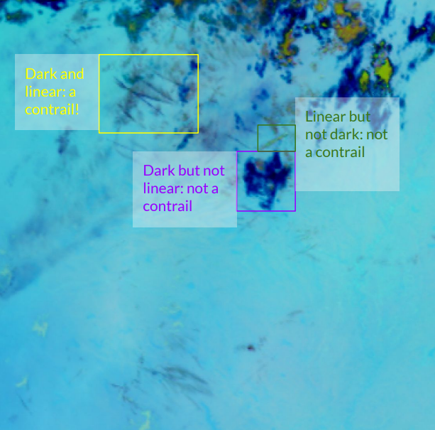
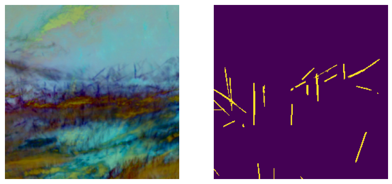

Contrails — line-shaped ice clouds from aircraft exhaust — contribute to global warming equivalent to or exceeding CO₂ from burning fuel during flights. Identifying them in satellite imagery is essential for mitigation.
Key challenges: noisy inputs, labelling difficulties, class imbalances. Contrails are hard to label, as they are hard to detect even for humans. ABI imagery is also large spatially (15kmx15km for a single pixel) so contrails are few are far in between.

Source: GOES-16 ABI satellite · Google Contrails Dataset

We follow standard CV preprocessing pipeline. One problem with our dataset is that flip and rotation augmentations lead to invalid masks, but we shifted the images by 0.5 to fix this.
The ResUNet model combines U-Net's encoder–decoder with ResNet-50 skip residuals. Pretrained on ImageNet, fine-tuned on contrail Ash images. We use a weighted combination of focal loss and dice loss.
Standard pixel-wise losses ignore shape priors. SR loss exploits the intrinsically linear geometry of contrails by penalizing disagreement in Hough space.
We revalidate and extend the baseline ResUNet + SR Loss pipeline, reproducing the original training protocol and testing on both the author-labeled and Google datasets. Confirms SR loss advantage over Dice/Focal, however still lacks in some cases.
We postulate that just enforcing a geometric inductive bias is not enough, due to the large number of adversarial mechanics with contrail segmentation.
We replace the standard U-Net decoder with an Attention Gate mechanism. We also swap our Unet backbone with a ConvNeXt backbone.
Key Motivations
Evaluated on Google OpenContrails validation set (~2000 images). Dice scores averaged over images with contrails (≥200px mask).
| Model | Loss | Dice Score |
|---|---|---|
| ResUNet | Focal | |
| ResUNet | Dice | |
| ResUNet Ext 1 | SR Loss | |
| Attn U-Net Ext 2 | Dice | |
| Attn U-Net Ext 2 | SR Loss |
* Illustrative values — replace with your actual results
Models trained with SR loss for 30 min on NVIDIA A10 G. Performance plateau reached surprisingly early:
Three takeaways from our extended study: